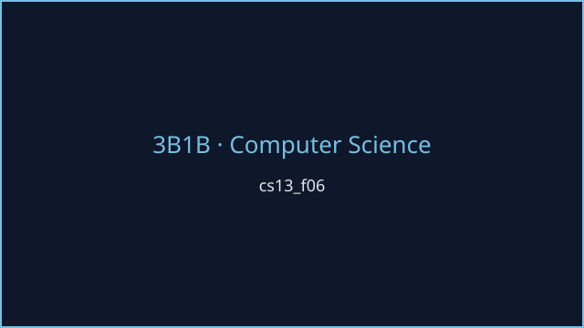

তিনটি দণ্ড—প্রথমটিতে ছোট থেকে বড় করে কয়েকটি চাকতি সাজানো। লক্ষ্য হলো সবগুলো চাকতি তৃতীয় দণ্ডে নিয়ে যাওয়া, কিন্তু কখনো বড় চাকতি ছোটের ওপর রাখা যাবে না। একবারে একটি করে চাকতি নাড়া যায়।
$n$টি চাকতির জন্য ন্যূনতম কত পদক্ষেপ লাগে? আর সেই পদক্ষেপগুলোর ক্রম কী?
অবিশ্বাস্যভাবে, পদক্ষেপের ক্রম বের করা যায় ০ থেকে শুরু করে বাইনারিতে গণনা করে। $i$-তম পদক্ষেপে $i$-র বাইনারি রূপের সবচেয়ে ''ডানে থাকা ১'' যে বিটে, ঠিক সেই নম্বরের চাকতিটি নাড়তে হয়।
এইভাবে ০, ১, ২, ৩… গণনা করলেই চাকতি নাড়ার সম্পূর্ণ সঠিক ক্রম পাওয়া যায়—কোনো পুনরাবৃত্ত চিন্তা ছাড়াই।
$n$টি চাকতি সরাতে—প্রথমে ওপরের $n-1$টি তৃতীয় দণ্ডে নাড়া হয়, তারপর বড় চাকতিটি মাঝখানে, তারপর আবার $n-1$টি ওপরে। তাই $T(n)=2T(n-1)+1$।
এই পুনরাবৃত্তিটি যদি চিত্রে আঁকি—বড় ত্রিভুজের ভেতরে তিনটি ছোট ত্রিভুজ, আবার প্রতিটির ভেতরে তিনটি—তবে পাই ''সারপিনস্কি ত্রিভুজ''। একই কাঠামো বারবার নিজের ভেতরে ফিরে আসে।
হ্যানয়ের পদক্ষেপের ক্রমকে বাইনারি গ্রিডে সাজালেও ঠিক এই ফ্র্যাক্টাল চিত্রটি ফুটে ওঠে—দুটি বিষয় আসলে একই গাণিতিক বস্তু।
বাইনারি গণনা, হ্যানয়ের টাওয়ার ও সারপিনস্কি ত্রিভুজ—তিনটি আলাদা মনে হলেও একই ''দ্বিঘাত পুনরাবৃত্তি''র তিন রূপ। কম্পিউটার বিজ্ঞানে এরকম সংযোগ বারবার দেখা যায়।
সরল নিয়মের বারবার প্রয়োগ জটিল ও সুন্দর কাঠামো তৈরি করে—এটি কম্পিউটার বিজ্ঞানের হৃদয়।
নিচের ইন্টারেক্টিভ উপাদান ও কুইজের মাধ্যমে পাঠের ধারণা নিজে যাচাই করুন।
